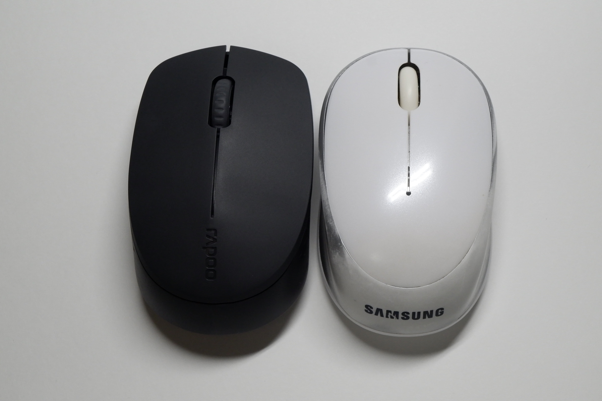
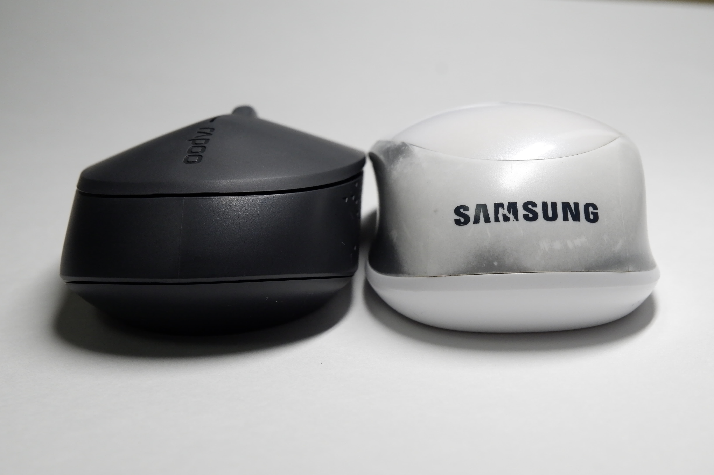
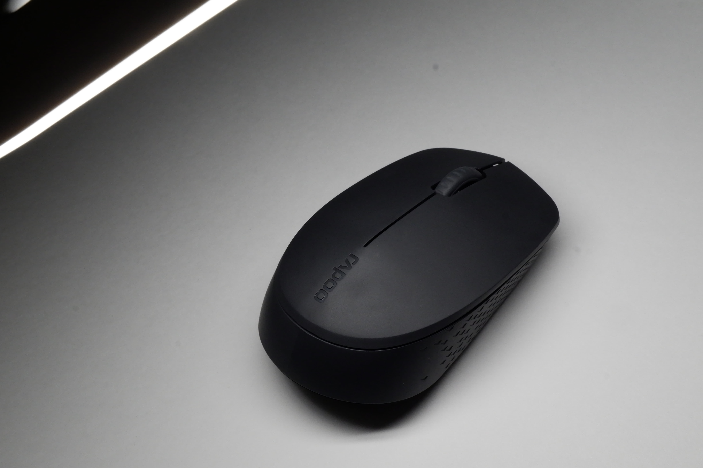
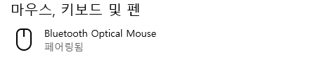
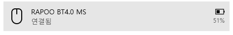

사용 후, 장점과 단점
장점
1. 크기가 작으면서도 납작하지는 않다.
예전 마우스와 비교했을 때 크기와 높이가 매우 비슷하다. 곡선은 부족한 편이지만 볼록한 모양이라 사용할 때 손목에 무리가 없었다.
2. 블루투스, USB 리시버 사용과 전환이 간편하다

기기에 페어링 해 둔 상태라면 리시버를 뺐다 끼웠다 할때 따로 연결하는 절차나 딜레이가 없다.
3. 심플하고 완전히 무광이다.

스탠드에 대놓고 들이대도 로고를 제외한 모든 부분이 정직하게 무광, 디자인이 단순하고 버튼도 단 3개
4. 여러 마우스와 동시 연결가능하고 건전지 배터리 잔량 확인 가능

(위가 예전, 아래가 새 마우스. 두개가 동시에 연결된 상태다.)
다른 마우스가 연결되어 있을 때도 연결 가능하다. 블루투스 장치란에서 배터리 잔량을 확인 할 수 있다.
5. 클릭 소음이 확실히 적다.
‘좌우’ 클릭 소음은 일반 마우스와 비교하면 적다.
영상을 보면 휠 버튼에서 뭔가 석연찮은 점을 느낄텐데 바로 단점에서 얘기해보겠다.
단점
1. 장점에서 클릭 소음이 적다고 했는데 휠 클릭은 무음이 아니다.
휠 버튼은 무음이 아님을 알고 구매한 것은 맞지만, 버튼음이 예전 마우스보다 훨씬 큰 수준. 심지어 클릭도 뻑뻑하다. 일상에서는 크게 사용 안하지만, C4D같이 휠 버튼을 사용하는 작업을 할 때는 불편하다.
2. 스스로 절전한다.
보기엔 장점같지만 이것 때문에 마우스가 자주 대기모드로 들어가면서 다시 움직일 때 잠깐 버벅거린다.
3. 블루투스로 연결 시 감도가 약간 떨어진다.
무선으로 하면 괜찮지만 블루투스로 연결하면 커서 움직임이 미세하게 덜 부드럽다.
(쓰는데 문제는 없지만 의식하면 거슬리는 정도)